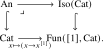
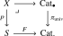
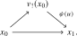
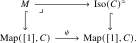
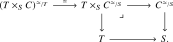
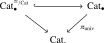
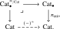

In this section we construct the universe of animae \(\An\) and equip it with the universal small left fibration \(\pi_{\univ}\colon \An_{\bullet} \to \An\). We further show that the inclusion \(\An \hookrightarrow \Cat\) admits the groupoid-core functor \((-)^{\simeq} \colon \Cat \to \An\) as a right adjoint. Its left adjoint will be constructed in Section 8.8.
Recall that a category \(X\) is an anima if all its morphisms are invertible, or equivalently if the functor \(p_{[1]}^*\colon X \to \Fun([1],X)\) is an equivalence. By the groupoid recognition axiom, the primitive animae are precisely the categories satisfying this condition. We therefore use it to cut out their universe internally:
Definition 8.6.1. Applying Construction 8.5.12 to the projection map \([1] \to [0]\), we obtain a natural transformation
\[
p_{[1]}^*\colon \id_{\Cat} = (-)^{[0]} \to (-)^{[1]}
\]
of functors \(\Cat \to \Cat\), which corresponds to a functor \(\Cat \to \Fun([1],\Cat)\) sending \(x\) to \(p_{[1]}^*\colon x \to x^{[1]}\). We say that \(x \in \Cat\) satisfies the anima condition if this morphism is an isomorphism in \(\Cat\). We define the category \(\An\) of animae via the pullback square

Definition 8.6.2. A small cocartesian fibration \(p\colon X \to S\) which is a left fibration is called a small left fibration.
Theorem 8.6.3. The functor \(\pi_{\univ}\colon \An_{\bullet} \to \An\) is the universal small left fibration: given a small cocartesian fibration \(p\colon X \to S\) classified by a functor \(F\colon S \to \Cat\), we have that \(p\) is a left fibration if and only if \(F\) factors through the full subcategory \(\An\) of \(\Cat\).
Proof
Let \(p\colon X \to S\) be a small cocartesian fibration classified by a functor \(F\):

Proposition 8.6.4. The category \(\An\) admits pullbacks, and the inclusion \(\An \hookrightarrow \Cat\) preserves pullbacks.
Proof
Recall from Corollary 8.5.9 that \(\Cat\) admits pullbacks: given morphisms \(c \to e\) and \(d \to e\) in \(\Cat\) corresponding to functors \(C \to E\) and \(D \to E\), the pullback \(c \times_e d\) in \(\Cat\) corresponds to the pullback \(C \times_E D\). We have seen in Lemma 2.4.9 that if \(C\), \(D\) and \(E\) satisfy the anima condition then so does \(C \times_E D\). By recognition, this shows that the functor \(\lim\colon \Fun(\pullback, \Cat) \to \Cat\) restricts to a functor \(\lim\colon \Fun(\pullback,\An) \to \An\) right adjoint to the diagonal functor. Thus \(\An\) admits pullbacks and its inclusion into \(\Cat\) preserves them.
8.6.1 Groupoid cores
We would like to show that the inclusion \(\An \hookrightarrow \Cat\) admits a right adjoint \[ (-)^{\simeq}\colon \Cat \to \An \] which assigns to every small category \(C\) its groupoid core \(C^{\simeq}\). For this, we start by constructing the fiberwise groupoid core \(C^{\simeq_{/S}} \to S\) of a cocartesian fibration \(p\colon C \to S\). It has the same objects as \(C\) and precisely the \(p\)-cocartesian morphisms. The following construction expresses this description as a subcategory that can be applied uniformly in families.
Construction 8.6.5. Let \(p\colon C \to S\) be a cocartesian fibration. Consider a morphism \(u\colon x_0 \to x_1\) in \(C\), and write \(v = p(u)\) for the resulting morphism in \(S\). We then get a unique map \(\psi(u)\colon v_!(x_0) \to x_1\) in \(C_{s_1}\) fitting in the following commutative diagram:
 
Definition 8.6.6. Given a cocartesian fibration \(C \to S\), we define the fiberwise groupoid core of \(C\) over \(S\) as the subcategory \[ C^{\simeq_{/S}} := \lra{M}_C \subseteq C. \]
Proposition 8.6.7. The resulting map \(p'\colon C^{\simeq_{/S}} \to S\) is a left fibration and the functor \(C^{\simeq_{/S}}\hookrightarrow C\) is a cocartesian functor over \(S\).
Proof
A direct inspection of universal properties shows that any morphism in \(C^{\simeq_{/S}}\) whose image in \(C\) is \(p\)-cocartesian is in fact \(p'\)-cocartesian. Since all \(p\)-cocartesian morphisms of \(C\) belong to \(C^{\simeq_{/S}}\), a \(p\)-cocartesian lift in \(C\) provides the unique \(p'\)-cocartesian lift with prescribed source. Thus \(p'\) is a cocartesian fibration and the embedding \(C^{\simeq_{/S}}\hookrightarrow C\) is a cocartesian functor over \(S\). By construction, every morphism of \(C^{\simeq_{/S}}\) is \(p'\)-cocartesian, so \(p'\) is a left fibration.
Lemma 8.6.8. Let \(p\colon C \to S\) be a cocartesian fibration and let \(f\colon T \to S\) be any functor. For any left fibration \(q\colon Y \to T\), there is an equivalence \[ \Map_T(Y, T \times_S C^{\simeq_{/S}}) \iso \Map^{\CoCart}_T(Y, T \times_S C). \]
Proof
Consider the following commutative diagram:

We are now ready to construct the groupoid core functor \((-)^{\simeq}\colon \Cat \to \Cat\).
Construction 8.6.9 (Groupoid core). Applying Proposition 8.6.7 to the universal small cocartesian fibration \(\pi_{\univ}\colon \Cat_{\bullet} \to \Cat\), we obtain a left fibration
 
Lemma 8.6.10. The functor \((-)^{\simeq}\colon \Cat \to \Cat\) factors through the full subcategory \(\An \subseteq \Cat\).
Proof
By definition of full subcategories, it suffices to show that for every object \(c\) of \(\Cat\) the object \(c^{\simeq}\) belongs to \(\An\). If \(C\) is the small category classified by \(c\), then a direct computation shows that its groupoid core \(C^{\simeq}\) is classified by \(c^{\simeq}\) (here one uses the equivalence \(C^{\simeq} \simeq \lra{\Iso(C)}_C\)). Since \(C^{\simeq}\) is an anima, the claim follows.
Proposition 8.6.11. The functor \((-)^{\simeq}\colon \Cat \to \An\) is right adjoint to the inclusion \(\An \hookrightarrow \Cat\), with counit given by the natural transformation \(\imath\colon (-)^{\simeq} \to \id_{\Cat}\).
Proof
Consider objects \(c,x \in \Cat\) and assume that \(x \in \An\). We have to show that postcomposition with the map \(c^{\simeq} \to c\) induces an equivalence of animae \[ \Hom_{\An}(x,c^{\simeq}) \iso \Hom_{\Cat}(x,c). \] Under directed univalence, this map agrees with the functor \[ \Map(X,C^{\simeq}) \to \Map(X,C) \] induced by the inclusion \(\imath_C\colon C^{\simeq} \to C\). The fact that this is an equivalence is Corollary 1.4.13.